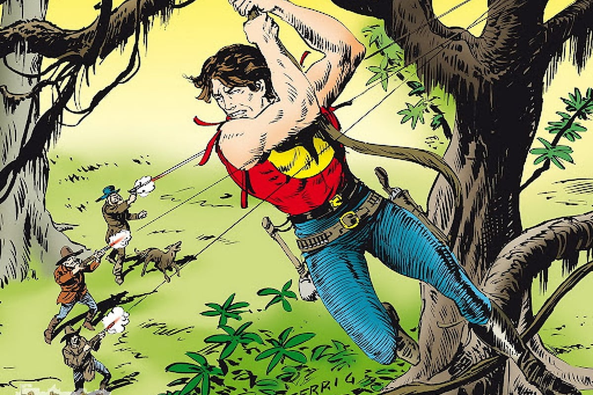
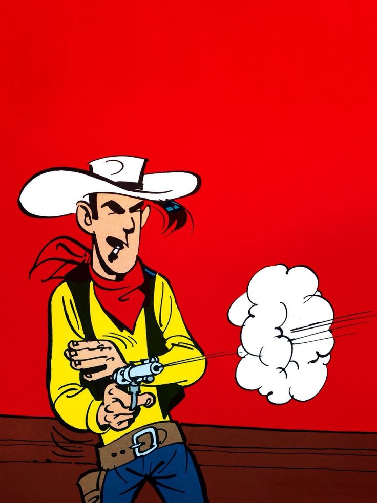

Zagor
Zagor je talijanski pustolovni / western strip nastao 1961. godine u izdanju izdavačke kuće Sergio Bonelli Editore. Ime Zagor dobija od indijskog "Za-Gor Te-Nay" što znači "Duh sa sjekirom". Radnja stripa smještena je između 1825. i 1830. godine
TEX

Tex Willer je glavni lik Talijanskog stripa Tex, kojeg je stvorio pisac Gian Luigi Bonellii a ilustrirao Aurelio Galleppini. Tex Willer je Talijanska interpretacija Američkog divljeg zapada inspirirana američkim vesternima.
Lucky Luke
Na hrvatskom je tržištu poznat i pod imenom Talični Tom. Lucky Luke je mršavi kauboj, čije je lice, kažu, "posuđeno" od Garryja Coopera. Putuje Amerikom XIX. stoljeća. Nailazi na mnoge nepravde tadašnjeg divljeg vremena, na još više divljim mjestima, i ne odlazi dok ih ne riješi. Stvorio ga je Maurice de Beverea, 1946. godine.